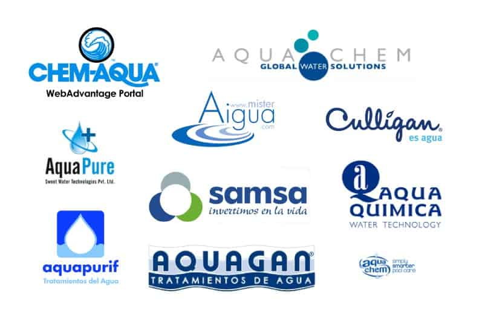

La informacion presentada en este sitio web ha sido compilada a partir de reportes y publicaciones de organizaciones internacionales y centros de investigacion reconocidos por su trabajo en el ambito del agua y el desarrollo sostenible.
Organizaciones y Entidades Clave:
- Organizacion de las Naciones Unidas (ONU) y sus agencias:
- UNESCO (Organizacion de las Naciones Unidas para la Educacion, la Ciencia y la Cultura): Especialmente a traves del Programa Mundial de Evaluacion de los Recursos Hidricos (WWAP).
- UNICEF (Fondo de las Naciones Unidas para la Infancia): En relacion con el acceso al agua, saneamiento e higiene (WASH) para ninos.
- Programa de las Naciones Unidas para el Desarrollo (PNUD): Sobre desarrollo sostenible y objetivos relacionados con el agua.
- Organizacion Mundial de la Salud (OMS): Datos sobre la calidad del agua y enfermedades relacionadas.
- Banco Mundial: Ofrece extensos informes y datos sobre la gestion del agua, infraestructura y su impacto economico.
- Banco Interamericano de Desarrollo (BID): Con enfoque en America Latina y el Caribe, aborda proyectos y analisis sobre recursos hidricos.
- Instituto de Recursos Mundiales (World Resources Institute - WRI): Conocido por su herramienta "Aqueduct" que mapea y evalua los riesgos hidricos a nivel global.
- WaterAid: Organizacion no gubernamental dedicada a llevar agua limpia, saneamiento y buenas practicas de higiene a las comunidades mas pobres.
- Consejo Mundial del Agua (World Water Council): Promueve el desarrollo y la gestion sostenible del agua a nivel mundial.
- Centros de Investigacion y Universidades: Numerosas instituciones academicas publican estudios cientificos sobre la hidrologia, el cambio climatico y la gestion del agua.

Se recomienda visitar los sitios web oficiales de estas organizaciones para obtener una informacion mas detallada ya que esto es solo un proyecto escolar.